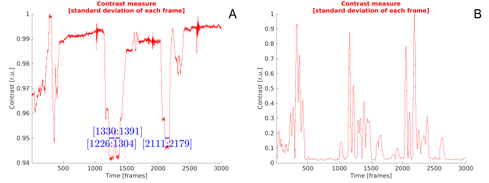
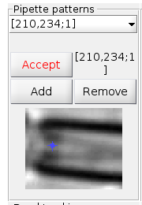
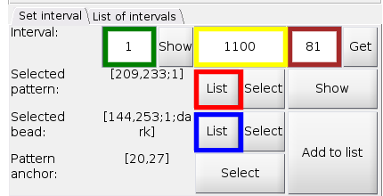
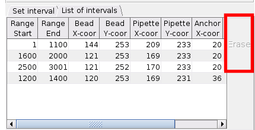
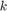
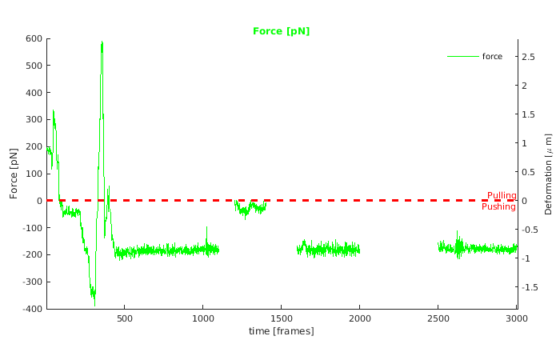
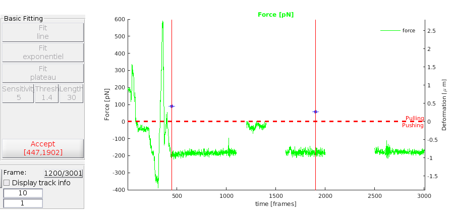
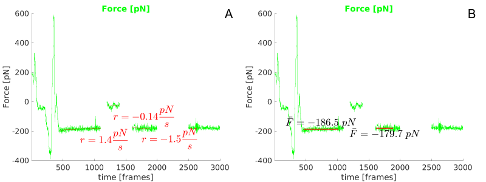
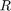
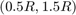

Advance guidelines
This file contains step-by-step instructions how to use specialised features of the BFPTool to resolve difficulities in tracking and introduces basic analysis and support tools incorporated. This text assumes the reader is familiar with the basics of the tool as illustrated in the Basic guideline .
The first half of this guide treates features, which allow user to construct a chain of incontiguous intervals to track, allowing her to avoid frames unsuitable for tracking (e.g. poor or variable contrast) or frames, where tracking is not necesary (e.g. the probe is disconnected). In the second half, post-tracking processing is discussed.
Contents
Contrast analysis
After opening a video, the contrast analysis should be performed (Analyse contrast button). During the analysis, 2D standard deviation of intensity is calculated for each frame of the video and normalized to have maximum of 1. This metric is called SD2. It is parsed, and intervals of frames with SD2 below 95% are reported. This can help user to identify intervals, which would be difficult to track and exclude them. At the same time, running standard deviation of the SD2 metric is calculated, to account for contrast local variability, called rSD2; it is also normalised to maximum of 1. Intervals of variable contrast are particularly difficult to track. User can switch between the two metrics using radio button SD2 / rSD2 in the Tracking panel. Two exemplary measures can be seen in Figure 1A,B

Figure 1A,B: A --- SD2 contrast metric, intervals of metric < 95% are labelled by blue line; B --- rSD2 metric, high peaks represent intervals of high variability, which should be reviewed
After revisions based on results from figure 1, we notice the video can be tracked in intervals (1,1100), (1600,2000) and (2500,3000). We can see that the focus is roughly the same in these intervals, therefore we can track all three of them using the same pipette pattern. To share a pattern across several intervals, we will use Tracking list panel.
Tracking list
- Click Show tracking list panel on the Import, export, UI settings panel. Two subpanes will be displayed, Pipette patterns and Bead tracking.
- Click Select on the Pipette patterns pane, draw a box around the pipette tip and confirm (procedure is the same as in Basic guideline ).
- Anchor position prompt dialog is displayed. You can click Default and anchor is positioned in the centre of the pattern. If You click Select, the pointer turns into cross-hair over the mini-axes, where the pattern is displayed---position a marker on the pattern to designate the anchor and click Accept button (see Figure 2).
- Click Add to add the pattern to the list of pipette patterns. Its coordinates and time frame are displayed in the drop-down menu (see Figure 2).
- Click Select on the Bead tracking pane, select the bead for tracking the same way as in the Basic guideline .
- Click Add to add it to the list of beads.

Figure 2: Selecting anchor point in mini-axes of Pipette patterns pane, before it is added to the list.
With the pipette pattern and the bead data saved, the chain of intervals can be constructed.
Building intervals list
- On the Set interval tab, on the Selected bead line, click List button (blue box in Figure 3). The bead currently selected in the drop-down list in Bead tracking pane as selected for tracking in the interval.
- On the line Selected pattern click List button (red box in Figure 3). The pipette pattern is selected from the Pipette patterns pane list the same way.
- Click the Show button to see the pipette pattern with the anchor point marked.
- If You wish to reposition the anchor, You can click Select button on the line Pattern anchor, reposition it in the new figure and click the Accept button.
- In the first edit filed on the Interval line (green box in Figure 3), type the first frame of the interval, 1. In the second field (yellow box in Figure 3), type the last frame of the first interval, 1100.
- In the last edit field on the line Interval (brown box in figure 3), type the index unstrained RBC reference frame. In our example, it is 81.
- Click Add to list button, to add this interval to the list of intervals. It is added without any modifications.
- You can review the interval information in the List of intervals tab of the same pane. In the same tab, You can erase an interval by checking its Remove box in the last collumn, and clicking the Erase button.

Figure 3: Interval list panel
Adding compatible intervals
- Go to the first frame of the second interval, 1600 in our example, and add the bead. You can either go through the Bead tracking pane, to have the bead saved, in case You need to rebuild the list, or, You can select it directly using Select button on the Selected bead line of Set interval pane (see Basic guideline ).
- Click List to add the same pipette pattern as in the first interval. Note that using the same pattern with the same anchor makes results from the two intervals fully compatible and comparable.
- Set the interval (1600,2000) in the line Interval, keep the anchor 81.
- Click Add to list. Program will display several dialog windows as it tries to locate the pipette pattern from another interval (1,1100) in the initial frame 1600 of newly added interval. It will be delineated by a red box. If the positioning appear correct, accept the location.
- Use the same procedure to add the last interval, (2500,3000).
The added intervals are compatible with the same pipette pattern. We can, however, add one more interval (after closely inspecting the video), with transiently stable contrast, (1200,1400), which has a separate, incompatible, pipette pattern.
Adding incompatible interval
- Go to frame 1200 and use the same technique as in Basic guideline to set up an interval ending in frame 1400.
- If reference distance frame is not available in the interval, we can try to arbitrarily select the first frame of the interval, 1200, and then, during analysis, try to shift the results, so they align with the values at the end of the previous interval (note this can be doce, only if pipette and the bead do not change position during the focus transition).
- Add the interval to the list using Add to list button.
In the tab List of intervals, we can see four added discontiguous intervals, as shown in Figure 4. Note the Erase button marked by the red box---clicking it erases intervals marked by checked boxes in the last collumn (not in the field).

Figure 4: list of selected intervals, the last collumn (not shown) has check boxes to select intervals for removal, erase button is marked in red
The list of intervals is tracked the same way as one-interval list in the Basic guideline .
Probe calibration
To obtain the calibrated, physical, results for Force, we need to calibrate the probe---measure its geometrical features.
- Click Show experimental data panel on the Import,export and UI settings panel. The panel is displayed in the bottom right.
- Type in Pixel to micron ratio. This should be available at Your experimental setup. If You miss this information, You can input an estimate, by measuring a scale bar or a calibrated object in Your video. Note that is You change the Pixel to micron ratio, You must Update the computational object and re-track Your video.
- In Pressure field, type in the aspiration pressure.
- Click RBC radius field. The pointer turns into a cross-hair.
- Click inside the unotuched RBC (i.e. it is not in contact with the bead) and click the button Confirm. The RBC is delineated; accept is detected properly, program updates the radius accordingly.
- Click Pipette radius button. Draw a line accross the inner diameter of the pipette at the inner appex of the RBC and click Confirm. The pipette radius is updated.
- Similarly, click the Contact radius button and measure the length of the contact between the RBC and the bead, then confirm.
All the parameters can be also typed directly in the appropriate edit fields, if measured externally. These values allow the tool to calculate the stiffness  of the particular probe. Clicking the Get Force button on the Tracking panel calculates the and the Force for the defined intervals. In Figure 5 can be seen the results, note the discontiguity and the second interval shifted beacause of the arbibtrary reference distance selection. Also note the huge peak in the first interval, it corresponds to rupture of the probe---the bead and pipette were still tracked, but their mutual distance did not correspond to the RBC distance, such intervals should be excluded from tracking and analysis. More details on the Force calculation and buttons ? and k can be found in the Basic guideline .

Figure 5: calculated force time course
Plotting the results
The results can be plotted using the plotting interface on the panel Tracking. The quantity to plot can be picked from the drop-down list just under the Plot button. The use of the interface is straightforward:
- In the edit fields right of Plot button, input the first and the last frame of requested interval to plot (note the first number must be smaller than the second).
- Check boxes Pipette if You want plot data for the pipette and/or Bead if You want to plot data for the bead. (Does not apply for Force and Contrast)
- From the drop-down menu, select the quantity You want to plot, of the list Force, Contrast, Metric (i.e. detection strength metric), Tracks (3D) and Trajectories (2D).
- Click Plot, the quantity is plotted in the Graph area in the upper right.
Basic Fitting tool
The panel Basic Fitting contains basic tools to fit a Line, Exponentiel and detect plateaux.
- Select interval to fit. Click Choose interval button and drag two blue dots accross the graph to delimit the interval (see Figure 6).
- Click Accept [X,X]. The button will change to Change [X,X], allowing further changes of the interval. Buttons on the Basic Fitting panel become enabled.
- Click Fit line or Fit exponentiel to fit the graph with particular lines/curve (see Figure 7A).
- Click Fit plateau to detect plateaux in the graph (see Figure 7B).
- Click buttons Sensitivity, Thresh and Length to input settings for plateaux detection, respectively:
- sensitivity to edges, higher number means higher tolerane to steps
- level of signal variance in the interval still considered a plateaux
- minimal length of a pleateau

Figure 6: setting interval for fitting

Figure 7: fitted line and plateaux detection; A: fitted lines with slope parameters (force rate), B: fitted plateaux with average force
Import, export and UI settings
There is a set of sources and targets for imports and exports. Not all combinations are supported. You can choose the two locations from the two drop-down menues and use the buttons Export and Import to transfer data in the given direction. The individual locations are:
Internal data sources/targets
- force & tracks: data of tracked trajectories and calculated force in form of columns of values
- frame: the currently displayed fram in video player
- graph: the current content of the graph area with the axes
- parameters: the whole current session exported into MAT file; can be openned later or on another machine
External data sources/targets
- workspace: data in the Matlab base workspace
- data file: external data file, like DAT, CSV, MAT etc.
- figure/media: media files, images, Matlab figure files
The same panel contains settings for the tool's GUI.
- Verbose: when checked, more dialog windows are displayed, if unchecked, the warnings are redirected to the command window
- UI Fontsize: size of GUI font. Numbers above 1 are values in pixels, number in the interval (0,1] are normalized font sizes. These may help to tune the GUI to various screen sizes. Initially, all GUI items are autoscaled to their uicontrol objects.
- Show/hide toggles: allow to hide some of the panel, which are not always necessary.
Detection settings
Click Show advanced detection panel on Import,export,UI settings panel to display the panel. It contains settings and thresholds used by the tracking methods, TrackBead and TrackPipette.
Pipette
- Correlation thresh: level of correlation coefficient to initiate corrective procedures trying to improve the detection. These are search in less restricted area or attempts to dilate or erode the pattern. Note these proedures cost considerable computational time and benefits are limited.
- Contrast thresh: threshold to initiate routine checks if contrast drops.
- Buffer frames: number of allowed consecutive detection failures before the tracking method aborts.
Bead
- Range radius: search for beads with radii within this radius. The radius range can be calibrated by clicking the Radius range button, clicking a bead in the frame and confirming. The bead is detected, if user accepts, the radius range is modified based on the radius  of the detected bead (i.e. ).
- Buffer frames: number of allowed consecutive detection failures before the tracking method aborts.
- Sensitivity: sensitivity to possible circular objects. 1-sensitivity=threshold of Hough circular transform accumulation array. Higher sensitivity means detection of weaker and partial circles.
- Gradient: gradient threshold to detect edge pixels eligible to vote in the accumulator array. The lower the threshold the higher the sensitivity.
- Metric thresh: threshold on the detection metric before other thresholds are relaxed and search is retried.
This concludes the full explanatou of the BFPTool GUI.